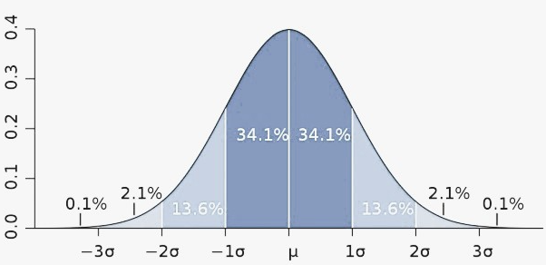

Influence on design of anthropometrics and ergonomics
Sources and applications of anthropometric data:
- Statistical data available from BSI is associated with heights of men, women and children
- The height of which 5% are shorter is known as 5th percentile
- The height of which 5% are taller is known as 95th percentile
- Designers use these values to try and fit a product from the 5th to 95th percentile
- Anthropometric data will vary for different ages and parts of the world
- Can be gathered by designers for certain genders/groups
